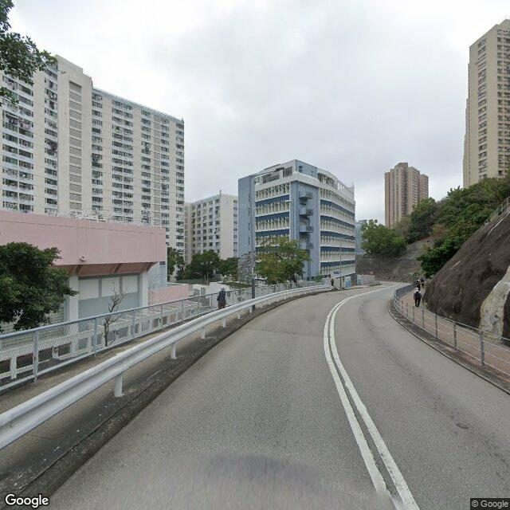
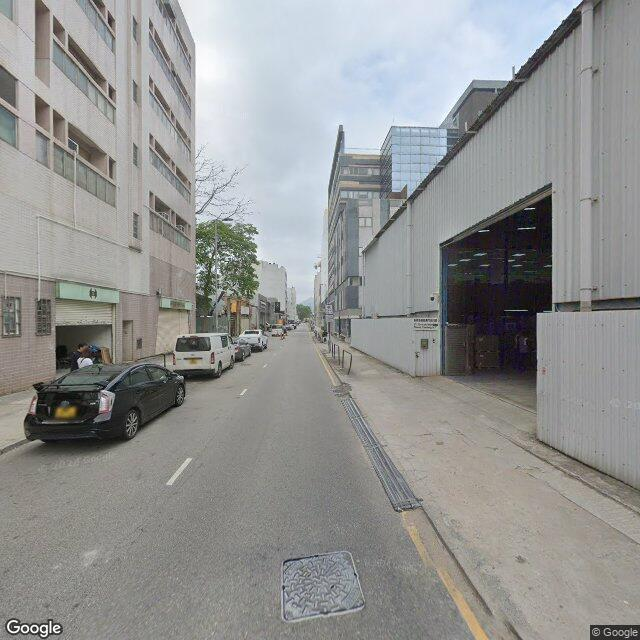

Spatial Heterogeneity of Urban Color
We perform clustering analysis based on the pixel ratios of 22 colors across all images.
Six dominant clusters are identified, demonstrating clear statistical and spatial patterns.

